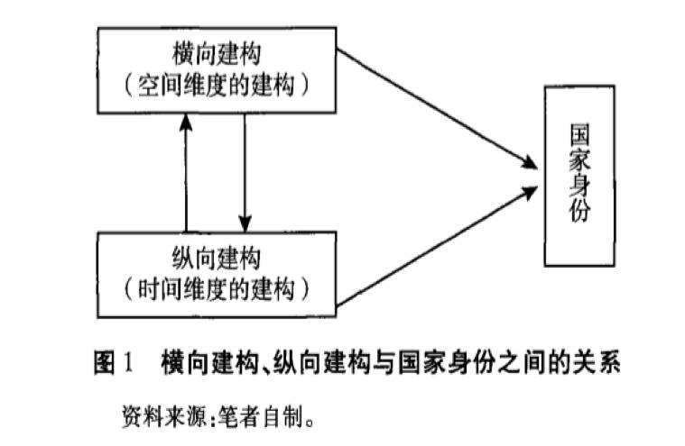
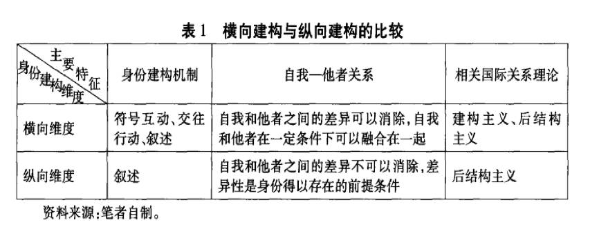
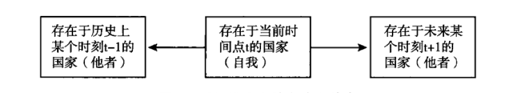
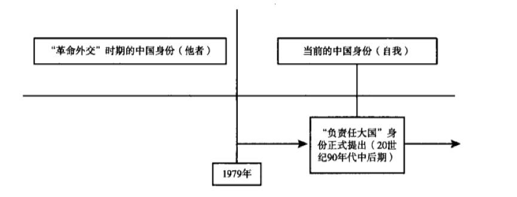
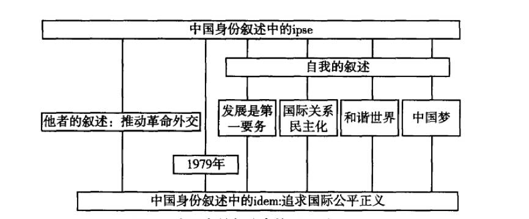

收录于合集

简
赵洋
对外经济贸易大学国际关系学院讲师
★
内容提要： 国家身份的建构过程可以分为横向和纵向两个维度。横向维度是指在空间上处于不同位置的作为自我和他者的两个行为体之间对于身份的建构过程，它的目标在于为这两个行为体在相互之间建构出一种双方都可以接受的身份，建构主义理论通过分析符号互动和交往行动等机制在这方面进行了比较深入的研究。纵向维度是指在时间上对于身份的建构，也就是说同一个行为体在不同的时间阶段当中是不同的，一个行为体自身的过去就成为相对于这个行为体的当前状态的“他者”。通过这种在时间上的自我和他者之间的并置，同一个行为体在不同的时间阶段当中也会呈现出不同的身份。这一过程主要是依靠叙述来实现的，后结构主义在这方面进行了有代表性的研究。身份的纵向建构意味着需要将时间性带到研究当中，而这可以对横向建构所关注的空间性形成很好的补充。作者运用后结构主义思想，结合中国在不同历史时期的叙述分析了负责任大国身份建构的过程，从而从纵向的角度揭示了这一身份的形成、发展和变化。
关键词： 国家身份；纵向建构；叙述；后结构主义；负责任大国
★
一、身份建构中的横向维度和纵向维度
按照温特的观点，身份是通过参与到集体意义当中获得的相对稳定、角色具体的关于自我的理解和预期。根据这一观点，身份为施动者界定其利益提供了基础，而利益则是根据环境来定义的。用埃米尔·涂尔干（EmileDurkheim）的术语来表达，身份就是一种“社会事实”。身份具有这一特性是因为它可以塑造一种相对稳定的意义结构，这种意义结构则决定了施动者在其中行动的方式。因此，可以说社会事实是身份的核心特征，它决定了身份的根本属性。
（一）身份具有以下三个特征：
第一，身份具有表述性，即身份是一种施动者在文本中表达的自我理解。 将身份理解为一种表述，就意味着身份在实质上是施动者的一种叙述。事实上，在任何一个国家当中，都存在着关于某一种身份的支配性叙述，叙述是施动者自身对于一种身份的认知，它所突出的是施动者的主体性地位，而不是外部环境对施动者的压力。
第二，身份具有过程性，即身份的建构是一个持续的和动态的过程，在这一过程中身份的内涵会随着时间的推移而不断发生变化。
第三，身份具有关系性，即作为一个社会事实，身份不能孤立地存在，而总是要在社会关系中才能得以体现，或者说身份只有通过自我和他者的并置才能得以存在。 就后结构主义而言，这种关系性是通过自我和他者之间的差异性来体现的。
（二）身份纵向建构角度中的表述性、过程性和关系性
从身份的纵向建构的角度来理解， 表述性是身份得以形成的关键要素。 它意味着身份是施动者对于自身的理解的叙述，施动者正是通过不断变化的叙述来为自身建立和维持一种身份的。在身份纵向建构的过程中，国家的叙述实践为其塑造了一种特定的身份，而通过对比国家在不同时期的叙述则可以明确一种身份形成、发展和变化的脉络。同时，身份的另外两个特性——过程性和关系性——也是纵向建构所依赖的特性。 过程性 意味着身份的形成是一个持续的过程，即在时间当中施动者的主体性可以被不断地建构和再建构。在纵向建构中，正是时间提供了衡量身份形成、维持和变化的关键指标。 关系性 则意味着身份需要通过自我和他者的对比才能得以存在，在这种对比中则蕴含着二者之间的差异。正如对于中国身份的研究所显示的，处于一个时间点两端的主体就构成了自我和他者，而处于当前的自我通过同处于过去的他者的对比来维持自身的身份。
（三）身份建构中横向与纵向维度对比
需要指出的是，对于任何一种身份而言，其建构过程都同时包含了横向和纵向两个维度，对于其中一个维度的研究并不意味着只有这个维度在起作用，它们二者之间是既相互区别又相互联系的关系。它们同身份之间的关系如图１所示。

身份建构的两个维度的特点如表１所示。

二、身份纵向建构中的叙述与时间性
同横向维度相比，身份建构的纵向维度具有两个突出的特点： 一是关注作为一种社会实践形式的叙述在身份形成中的作用；，二是强调身份建构中的时间因素。就第一个特点而言，语言或话语在一定意义上本身就是一种实践形式，这是基于两个原因：第一，语言维持主体间性，并因此将施动性、结构和过程以一种具有社会意义的方式联系起来。第二，语言不仅仅是传播意义的渠道，而且是一种行动。因此，叙述也可以被看作一种话语实践形式。就第二个特点而言，有学者从施动者一结构的角度指出，内在不稳定的施动者会寻求持续变化的身份。从这个意义上讲，时间性本身就是一种结构，而处于这种结构当中的主体则构成了施动者。在时间结构中，作为施动者的主体会不断地为自己寻找一种恰当的身份。
（一）身份建构中的话语和叙述
1.身份建构中的话语
在话语理论当中，身份的建构主要通过施动者承担一个特定的“主体地位（Subject- positions）”即在一个话语中的地位来实现的。一旦施动者进入话语所设定的主体地位当中，它就会展现出一种“我”或“我们”的身份，这样它在这个话语中就成了一种“说话的主体（Speaking Subject）”，从而拥有了一种特定的身份。这是一种与通过将规范内化而获得一种身份完全不同的过程，因为施动者是主动塑造了一种身份，而不仅仅是从其他施动者那里接受一种规范。从这个角度来看，施动者所说的东西是最重要的，只要它在话语中表达了一种身份，它便可以拥有这种身份。
因此，从说话的主体的角度来看，国家就不仅仅是社会化的客体，而是可以积极为自己定义一种身份的施动者。 这就超越了建构主义过于关注身份的“宾我（ｍｅ）”方面而忽视了“主我（Ｉ）”方面的局限性，转而关注国家自身对于身份的塑造。事实上，已经有学者注意到了这个问题，并且指出建构主义将主要的研究焦点放在了“宾我”方面，而对“主我”关注甚少。也就是说，建构主义主要关注一个国家在国际体系当中相对于其他国家的自我感被定义的方式，而忽视了身份形成的内部来源。
2.身份建构中的叙述
具体而言，说话的主体是通过叙述来为国家建构身份的，而叙述则是通过其国家的“国家性（Stateness）”从一个关系网络中得以产生的机制。国家则是一个通过叙述所建构的实体，这种叙述包含了给予过去以意义的经验维度和给予未来以意义的构思（envisioned）维度，并且国家身份同时根据这两个维度来描述。通过这种叙述，人们就可以得到一种分析国家的世界观（world- view）的框架，而这种世界观则赋予国家的时空境况以意义并且支配它在世界上的行动。同时，尽管在实质上叙述是在记录对自我产生了重要影响的各种事件，但它并不是将每一个事件都记录下来，而是强调记录能够推动身份建构的事件。
（二）身份建构中的时间性
在研究身份的纵向建构时，另一个不可忽视的事实就是身份具有时间性，也就是说， 身份会随着时间的推移而不断地发生变化。 从施动者- 结构的角度来分析，就意味着人类的时间性是施动者- 结构问题的核心。身份具有时间性这一事实还意味着历史记忆在建构身份的过程当中具有独特的作用，而历史记忆同样需要通过叙述来表达，因此时间性也是同叙述交织在一起的。部分学者已经开始在这方面进行实证研究，如有学者指出中国在清代末期和民国时期所受的外国压迫始终在关于中国身份的叙述中处于中心位置，而这就引发了中国对于一个独立的主权民族国家身份的追求。
法国哲学家保罗·利科（Paul Ricoeur）的idem和ipse。既然身份是通过自我和他者的并置而存在的，那么自我和他者也就可以存在于时间之中。 利科使用两个拉丁文词汇idem和ipse来表达身份的不变和变化的方面，idem所表示的是身份在时间和空间上的联系性以及一致性，ipse表示身份有能力重新阐述它自己，从而反映了身份变化的方面。身份的idem和ipse之间的关系表明，身份变化不仅仅发生在自我和他者之间，也发生在自我内部。也就是说，一个国家不仅可以通过将自身的过去看成他者而为当前的自我设定一种新的身份，而且这种新身份本身的内涵也会不断变化。
通过借鉴利科的思想，就能够确定自我和他者同样可以存在于时间当中，而这就拓宽了传统上对这一问题的理解。如果将自我和他者同时间上的过去、现在和未来相结合，就意味着相对于在当前的时间点ｔ存在的实体而言，在ｔ－１或ｔ＋１时间点存在的同一个实体也可以充当当前实体的他者。当然，无论是针对作为个体的个人还是作为想象共同体的国家而言，通过经验在过去的某个历史时刻塑造他者要比通过构思在未来的某个时刻塑造他者更容易，因此国家在通过时间维度来建构身份的时候总是将存在于过去的同一个实体想象为他者。或者说，施动者在时间结构中是一种当前的“自我”，需要在它们自己的历史中将它们的背景记忆和再记忆为他者。这就意味着他者经常是存在于自我的历史记忆当中的，时间维度上的自我和他者的关系可以如图2所示。
图2：时间维度上的自我和他者

资料来源：笔者自制
三、中国负责任大国身份的纵向建构
从纵向建构的角度分析，身份的形成就是一个持续变化的过程。在对中国的身份问题进行研究时，一些学者也注意到这一点。例如， 江忆恩（Alastair Iain Johnston） 从 社会学制度主义 的角度出发，将中国身份的变化看作对于外部的制度性压力做出反应的过程，并提出了推动中国身份变化的三种机制，即模仿（mimicking）、社会影响和说服。在江忆恩看来，中国身份的变化在总体上还是对外部压力做出反应的结果，而这种变化的一个主要表现就是中国参与的国际制度和国际组织的数量日益增多。
巴里·布赞 （Barry Buzan）通过结合 外部制度性压力 对中国身份的变化进行了纵向对比，指出当前的中国拥有一种“改良型修正主义者（reformist revisionist）”的身份，从而同历史上的“革命型修正主义者（revolutionary revisionist）”形成了对比。布赞指出，前者的特点在于国家同时出于适当性和工具性原因接受某些国际制度，但又抵制并且希望改变另外一些制度，而后者的特点则在于从观念上抵制构成国际社会的制度。 但是当前对中国身份问题的研究普遍存在两个问题：一是没有明确将叙述作为一种推动身份建构的机制，二是忽视了身份具有时间维度这一事实。 前者意味着一种身份的形成不仅仅是国家对于外部环境压力做出反应的结果，国家的施动性同样推动了身份的建构，后者则意味着身份的变化实际上具有两层含义：一是身份本身的变化，即国家脱离了一种旧有的身份并且获得了一种新的身份（即自我相对于他者的变化）；二是这一新身份本身的内涵也会不断地发生变化（即自我内部的变化）。
（一）身份本身的变化：自我和他者的维度
如果将负责任大国看作改革开放后中国为自身设定的一种身份，那么这一身份所对应的他者就应该是中国先前的身份。事实上，中国一直积极主张承担国际责任，但是对于责任的认识则是在不断发生变化的。可以从两个角度来理解负责任大国的含义：首先，意味着中国会在自己力所能及的范围之内承担国际责任，也就是说会通过力所能及的方式来为国际社会提供一定的公共产品。其次，意味着中国是一个现状国家（ｓｔａｔｕｓｑｕｏｐｏｗｅｒ），即不寻求挑战当前主要国际制度的正式的或非正式的规则以及不寻求在国际体系中实现激进的权力再分配。
事实上，１９４９年以来中国一直强调要承担一定的国际责任，但是这种责任未必可以得到国际社会的认可。 这是因为在中华人民共和国成立以后相当长的一段时期之内，中国对国际社会一直持有一种负面认同 （ｎｅｇａｔｉｖｅｉｄｅｎｔｉｆｉｃａｔｉｏｎ），即反对现有的（西方主导的）国际社会，并且不承认自身是这个国际社会的成员，同时，拥有负面认同的国家寻求改变现存的国际秩序以及颠覆支撑这种秩序的规则和规范。需要指出，中国的这种负面认同主要是针对西方主导的国际社会而言的，而这部分是西方国家对新中国采取敌视政策所导致的。如西方国家对中国的经济封锁导致中国只能依赖于苏联东欧国家的经济援助，并且参照苏联模式建立起计划经济体系。另一方面，作为一个在近代历史中饱受帝国主义和殖民主义剥削和压迫的新独立国家，中国很显然不会简单地继承现有的外交关系，而是会“另起炉灶”，即首先要清除殖民主义残余的影响，同时也要运用自己的影响力“把世界人民团结起来”，在被压迫的国家和人民中鼓励世界革命。如前所述，叙述是推动身份在纵向维度得以建构的主要机制，而叙述本身又可以被看作一种话语实践。因此通过观察中国在不同时期的话语实践就可以在时间中区分出自我和他者，进而明确当前的自我所拥有的身份。
通过分析改革开放前中国叙述国际责任的文本，就可以确定在该时期中国对国际责任的认知。 １９５６年，中国共产党第八次全国代表大会政治报告指出，当时中国“最高的国际义务”和“对外政策基础”是加强同苏联和东欧集团的团结。毛泽东也曾经表示，“世界上最愿意改变自己地位的是无产阶级，其次是半无产阶级，因为一则全无所有，一则有也不多……这个局面总有一天要起变化。中国的穷国地位和在国际上无权的地位也会起变化，穷国将变为富国，无权将变为有权——向相反的方向转化”。到了２０世纪６０年代，中国更是明确将“推进世界革命”作为自己外交政策的主要目标，强调“世界大战不可避免”和“战争引起革命，革命制止战争”的论点，并且号召“全国人民团结起来，打倒帝国主义，打倒修正主义，打倒各国反动派”。与这种责任观相呼应的是中国对于联合国也持有负面态度，如在２０世纪６０年代声称，要“另立一个革命的联合国，与那个被美国帝国主义操纵的因而只可能做坏事而不可能做好事的联合国唱对台戏”。即使是在恢复在联合国的合法席位之后，中国的态度仍然以负面为主，如对联合国维和行动的费用问题就指出在“少数国家的操纵下，几次派出‘联合国部队’，进行干涉别国内政的‘维持和平行动’，从而造成财政困难，为这些活动提供费用是‘毫无道理的’，是不符合《联合国宪章》的宗旨和原则的不正当支出，从而不应作为联合国的开支”。
很明显，这些叙述所反映的当时中国对于自身国际责任的认知并不能被西方主导的国际社会所接受。特别是２０世纪６０年代以后，受到“反帝反修”思想的影响，中国一度奉行“革命外交”，并根据意识形态和社会制度来决定国际交往中的亲疏好恶，从而将对外援助置于不恰当的方向和比重上。在这一时期里，同中国已经建交的４０余个国家当中，有３０余个同中国发生了外交纠纷。 这些事实都证明，尽管重视自身的“国际责任”，但当时的中国并不能称为一个“负责任”的大国。
另一方面，当时的中国也不是一个“维持现状”国家。 中华人民共和国在成立的最初３０年当中，主要致力于推动世界革命，“基本是以革命战争年代的思路与做法，发展新中国的对外交往，定位中国在当代国际体系位置的‘最初阶段’”。尽管这一时期中国的外交也出现过调整和回摆的姿态，“左”倾和推动世界革命也不能代表这一时期中国外交的全部，但是“这种势头短暂且乏力，并没有像后来的邓小平引导的改革开放进程那样，引导中国建设性地融入国际体系”。在这种大的指导方针的指引下，中国对于西方主导的国际制度和国际规范也不可能抱有包容和接受的态度。
中国这种游离于西方主导的国际社会之外的状态，只有在１９７９年国内政治发生了重大变化之后才能得到改变。当然，不能简单地将某一种身份的形成归结为国内或国际因素所导致的，而是应当将身份理解为是国家内部和外部因素之间互动的产物。但是从将国家看作“说话的主体”来分析，国内政治进程无疑会对国家身份的形成起到重要的推动作用。国内政治的变化至少在以下几个方面推动了中国外交的变化：第一，中国对于时代主题的理解发生了变化，从革命与战争转变为和平与发展。第二，中国外交的目标从颠覆旧的国际秩序和建立新的国际秩序转变为服务于国内经济社会发展。第三，中国开始关注自身的国际形象，而这也推动中国更加关注自己能提供给国际社会的公共产品以及所能承担的国际责任。第四，中国外交强调要配合国内改革开放政策，从而反映了一个“在实践中学习，在学习中实践，不断完善”的过程。从国际责任的角度来讲，负责任大国就意味着遵守而不是挑战现有的国际秩序，只有通过遵守国际社会的主导规范，中国才能逐渐在国际共同体当中建构出一种负责任大国的身份。
从纵向建构的角度分析，可以将１９７９年看作中国身份变化的一个分水岭，这一个时间点区分了身份中的自我和他者。１９７９年之后，中国开始积极主动地融人由西方国家所主导的国际秩序当中，尽管并不完全认同这一秩序。我们可以将１９７９年之后中国的国家身份称作负责任大国身份，因为在这一时期中国开始寻求融人国际社会，并且致力于遵守国际社会的主要规则和制度，而不再是游离于国际社会之外开展“革命外交”。通过这种变化，１９７９年以前的中国身份就成为构建了负责任大国身份的他者。另一方面，尽管“负责任大国”这个概念是在２０世纪９０年代才提出来的，但是这一身份的形成则可以追溯至１９７９年，这是因为在１９７９年以后中国对于国际责任的认知就开始发生根本变化并一直延续至今。因此，对于负责任大国这一身份而言，在１９７９年至负责任大国身份正式提出来之前这段时间当中的中国身份不是“他者”，而是“自我”的一部分，它的“他者”仍然是１９７９年之前的中国身份。这种关系可以通过图3来表示。

图3：中国负责任大国身份的纵向建构
资料来源：笔者自制
（二）身份内部的变化：自我的纬度
身份的时间性同时意味着，不仅通过在某一个具体的时间点两端的自我和他者的并置一种新的身份可以形成，而且这种新身份本身也是在不断发展变化的，其内涵会随着时间的推移而不断丰富，或者说人们会随着时间的推移不断地赋予新身份以新的含义。就负责任大国身份而言，它在１９７９年形成之后，也经历了不断发展变化的历程。但是同前一个阶段相比，这种变化不是不同身份之间的转换，而是同一种身份内部的变化，或者说是自我内部的变化，它经历了从以自我利益为中心的责任观到自我利益同利他主义并重的责任观的转变。
同１９７９年之前的阶段相类似，１９７９年之后中国的责任观仍然鲜明地体现在自身的叙述当中。如果历史地看，在进人２０世纪８０年代之后，中国对于国际责任的正式表述明显增多。但这种对责任的理解起初是以自身利益为基础的，或者说是主要从自身利益的角度出发来发展中国的对外关系。
在20世纪80年代，中国开始融人国际社会，但是此时中国对于自身国际责任的认识仍旧停留在以自我利益为中心的阶段。 中国采取以自身利益为基础的国际责任观并无不妥，但是随着中国融人国际社会的程度不断加深以及自身实力的增强，仅仅根据自我利益来界定国际责任就会遇到越来越多的问题。一方面，外部环境要求中国承担更多的国际责任；另一方面，中国自身也有意愿承担更多的国际责任。因此， 进入20世纪90年代以来，中国开始更多地参与到国际事务当中。 1997年爆发的亚洲金融危机为中国展现负责任大国提供了一个契机，中国政府公开宣布人民币不贬值，为周边国家提供了重要的经济援助，并且广泛呼吁完善地区经济合作机制，而这一切都得到了国际社会特别是周边国家的广泛赞誉。 进入21世纪以后，中国展现国际责任的频率不断增加，场合不断增多，利他主义的倾向也更加明显，以使自己的发展能够惠及更多国家。 2013年中国国家主席习近平提出了“一带一路”的倡议，并采取了包括成立亚洲基础设施投资银行（亚投行）在内的一系列举动，而这将为地区乃至全球提供更多的公共产品。例如亚投行就有助于完善现行的国际发展融资体系，弥补亚洲国家在基础设施建设方面的资金缺口。
每一个时代都以它自己的方式使用文本。我们也可以通过中国重要的官方文本来理解国际责任的变化。 1993年的政府工作报告就提出了中国参与国际事务的问题，在随后的历年政府工作报告中，其内容结构大致稳定，只是会添加或减少个别主题。这种相对稳定的表述意味着中国对于国际事务的看法日趋稳定和成熟，而这就使其对于自身身份的理解也更加稳定。在这一时期，维护世界和平稳定、应对全人类的共同挑战逐渐成为中国对外关系中的主导性话语。
1.在1992年的中国共产党第十四次全国代表大会报告中，江泽民指出中国倡导建立“和平、稳定、公正、合理的国际新秩序”，“支持联合国及其安理会在维护世界和平，推进裁军进程，促进全球发展以及解决国际争端等方面发挥积极的作用”。
2．1997年党的十五大报告指出，国与国之间应当“超越社会制度和意识形态的差异，相互尊重，友好相处。要寻找共同利益的汇合点，扩大互利合作，共同对付人类生存和发展所面临的挑战”。
3.2002年党的十六大报告则指出“树立互信、互利、平等和协作的新安全观，通过对话和合作解决争端，而不应诉诸武力或以武力相威胁”。
4.在2007年党的十七大报告中，胡锦涛指出要“共同推动经济全球化朝着均衡、普世、互惠、共贏方向发展”，“共同促进人类文明繁荣进步”，“共同呵护人类赖以生存的地球家园”。
5.2012年党的十八大报告则特别强调，要“倡导人类命运共同体意识，在追求本国利益时兼顾他国合理关切，在谋求本国发展中促进各国共同发展，建立更加平等均衡的新型全球发展伙伴关系，同舟共济，权责共担，增进人类共同利益”。
6.十八大之后，习近平在阐述“中国梦”的时候又提出，“中国梦不仅造福中国人民，而且造福各国人民”；“中国始终坚持合作共赢，越来越多的国家正从中国的发展中受益”；“随着国力的增强，中国将进一步发挥负责任大国的作用，在力所能及的范围内承担更多国际责任和义务，为人类和平与发展的崇高事业做出更大贡献”。
通过对上述官方文本的分析可以看出，中国正在不断地将自身的利益同国际社会的利益协调起来，并且致力于构建和维护国际社会的共同利益。从1992年的“国际新秩序”到2012年的“命运共同体”，再到“中国梦＂，中国对国际责任的认识呈现出一种“认知进化”的趋势，即作为社会实践的新观念和知识会不断地得以制度化。
通过对中国关于国际责任的叙述的时间性分析，可以看出这种叙述中同时包含了利科所谓的身份的idem和ipse方面。就中国身份中的idem方面而言，也就是其中持续不变的内容，主要体现在对于国际公平正义的追求上，并始终将其作为自身国际责任的支撑点，或者说中国始终将追求国际责任作为自身身份的重要基石，尽管这种责任未必能够得到其他国家的认可。这一方面同中国的传统文化有关，如中国文化中对于“义”的关切就强调要将相互信任、真诚、追求正义和相互帮助作为协调人际关系的主要规则，而这也体现在对外行为上。同时中国也强调道德的重要性，认为公开追求权力是一种缺乏道德的表现。另一方面也同中国自身的历史记忆有关，如中国近代的“百年屈辱”推动了对于反帝反霸以及平等正义的追求。即使是在“革命外交”时期，毛泽东等人也强调各国间兄弟般的关系，而这又导致了中国寻求在世界范围内追求反帝革命。这一时期中国追求公平正义的另一个表现是同印度一起提出了和平共处五项原则，并将它作为处理国家间关系的基本准则。这也反映在中国的叙述上，如它的外交话语中始终包含社会主义、和平共处和反霸权主义三个要素。就中国身份的ipse方面而言，它主要体现在中国对于国际责任的认知的变化方面。相比于毛泽东，邓小平更关注建立一个和平稳定的国际环境，从而有利于中国的发展，并且愿意在平等的基础上同任何国家发展友好关系。邓小平之后的领导人则越来越强调将中国自身的利益同其他国家的利益协调在一起，如江泽民倡导国际关系民主化和发展模式多样化，胡锦涛和习近平分别提出“和谐世界”和“中国梦”的理念。这种变化在叙述中的表现就是“反对现状”的说辞越来越少，建设性和前瞻性的话语越来越多。
 图4：中国身份叙述中的idem和ipse
资料来源：笔者自制
结论
第一，身份的纵向建构证明了叙述和时间性在研究身份中的重要意义，而这往往被现有的研究所忽视。 作为一种话语实践形式，叙述意味着施动者讲述了一个关于世界的故事，而这个故事的变化则同施动者对于自身身份的理解的变化相一致。因此，通过分析在不同的历史时期国家对于身份的叙述，就可以确定一种身份形成、维持、发展及变化的过程。时间性则一方面意味着身份的形成产生于处于不同时间点两端的自我和他者的并置当中，另一方面也意味着同一种身份随着时间的推移也会发生变化，本文通过在自我和他者的维度以及自我内部的维度对于中国身份变化的分析证明了这一点。同时，叙述和时间性是相互交织在一起的，正如本文对中国身份的分析所显示的，在时间结构中身份的任何变化都需要通过叙述来表达。
第二，纵向建构有助于中国明确自身的身份定位。 随着综合国力的增强和国际地位的提高，中国对于其身份的追求也越来越强烈，为自身建构一种恰当的身份是中国在国际社会当中得以立足的关键要素之一。在对自身进行身份定位时， 中国需要两个参照点：一是国际社会中的其他成员，二是中国自身的过去。 这也就意味着负责任大国身份既要得到其他国家的认可，也要同中国先前的身份形成对比，而后者往往会被忽视。纵向建构正是通过将中国在1979年之前和之后的身份进行对比而突出了当前的负责任大国身份，从而弥补了单纯关注横向建构的不足。（本文经国政学人首发编辑，转载请注明“转载来源：国政学人（ID：guozhengxueren）微信公众平台”，注释略，详见原文。本文有删节和改动。）
文章来源： 《世界经济与政治》2016年第7期
筛选： 红尘 编辑： 小宜 沉安
声 明
国政学人微信公众平台系非盈利学术平台。建立初衷是方便广大学人进行学术研究，促进学术的传播和交流，不做任何商业用途。如有任何权利问题，请直接与我们联系。
轻点下方广告支持我们
我们将更好地为您呈现精彩内容！